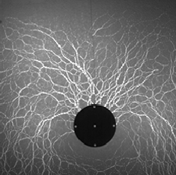
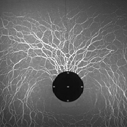
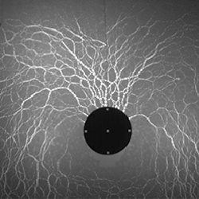
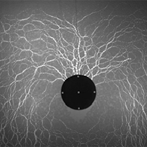
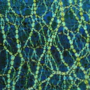

- 
- 
- 
- 
My Interests
In AP chemistry, my senior year of high school, I fell in love with the quantum mechanical model of the atom. I read books targeting the general population, which both mystified and excited me even more. I learned that the quantum realm falls into the field for physics, so I entered college intending to major in physics. The completion of Introdution to Modern Physics has only strengthened my interest in quantum mechanics, and has led me to believe that my true interests lie in particle physics. In addition to physics, I have recently found that I love computer science. I am still fairly new to the subject, so I don't know where within the vast field my interests lie. I have found that the two fields are complementary. I am excited to combine the two in future research projects.
-
Condensed Matter Physics

- In the summer of 2013, I worked in the
Behringer Group
at Duke University, in Durham, North Carolina. The primary focus of my work was granular physics, specifically network theory, granular mechanics, and granular impact. The primary project I worked on was studying the effect of velocity on pulling an intruder from a granular material. The research was conducted using a two-dimensional systems of photoelastic particles.